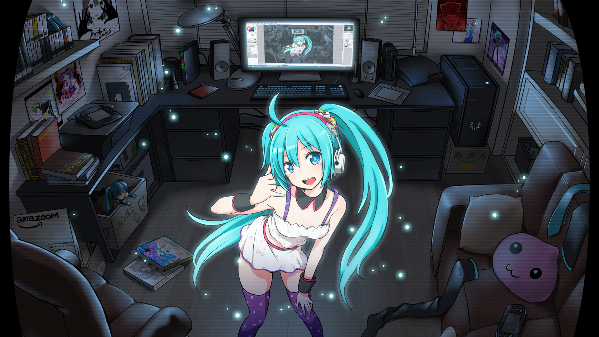

- 


Kunose es la idea de un chico (adolecente) con un pensamiento desagradable para muchos e interesante para unos pocos. "Eh notado la hipocresia cruda de las personas ante su intento de expresion artistica"
Muchas veces un buen comentario, un elogio o un regalo, suelen animarnos a la vez que dejarnos ciegos ante la realidad, ya siempre habra alguien a quien no le agrade tu trabajo. Creemos que ignorando a estas personas logramos algo bueno, pero la verdad es que antes de dar alguna opinion, hay que demostrar que tenemos fundamentos para ello.
En Kunose optamos por criterios bien establecidos para apoyar a las mentes creativas que buscan darse a conocer.